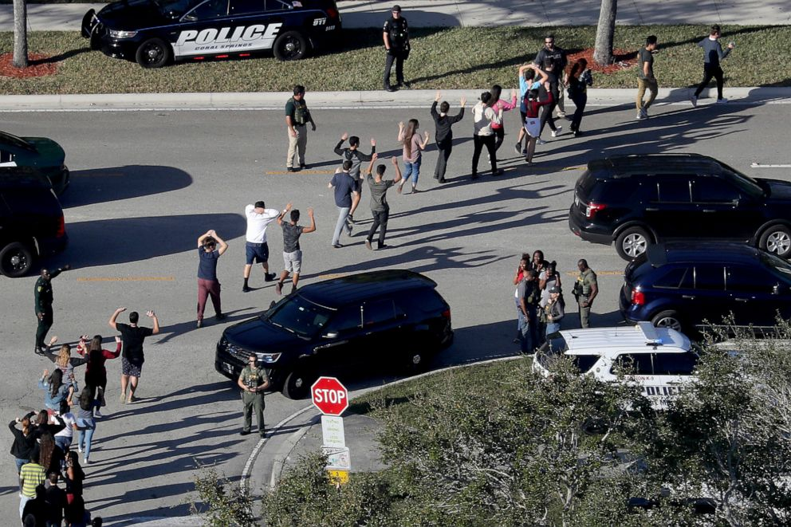

After 14 high school students and 3 school administrators were killed,
the teens who survived stepped into action, launching what would be
a national push for gun control, culminating in the March For Our Lives.
Previous
Next
Back to Homepage